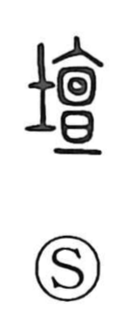

壇

Kun: | On: dan
altar ・ dais ・ platform ・ stage
Explanation
壇 is a phono-semantic character: the left element 土 points to heaped earth, while the right element 亶 supplies the sound and originally depicted a granary structure raised on an earthen podium—the base of a building. From this imagery arose 壇 as the figure of a raised earthen place prepared for worship. Shuowen glosses it as an altar for worship, that is, a stage of packed soil set apart as sacred ground. Hence expressions like 壇場 (danjo) evoke the consecrated, leveled area where rites and festivals were conducted, a place for approaching the gods.